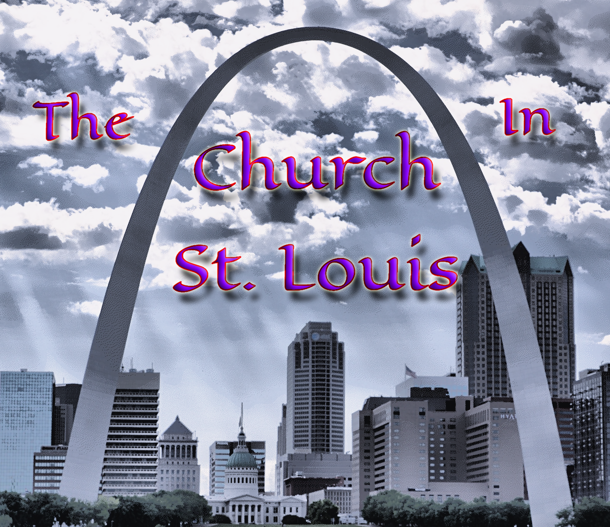

Welcome one and all!We are a group of believers based in St. Louis who are primarily Chinese speaking. We have diverse ages and backgrounds, yet we all come together to love and enjoy our Lord Jesus Christ, our only focus.We meet every Sunday from 9:45-12:00 |
 |
We are Christians centered on Christ and the Bible, meeting in St. Louis, MO. We stand on the ground that all regenerated Christians are one. For this reason we take no other name than the church, which simply means "assembly" (in the original Greek word). We pursue the subjective experiences of Christ together in the Word, in the gospel, and in the genuine care for one another. Our life is not a Sunday-only life but a 24-7 life of living Christ.
OUR COMMITMENT: Here in the church in St. Louis, we feel the Lord has committed us with three main items. First, Jesus Christ is to experienced. He is not meant to be merely knowledge, nor merely teachings. He is to be subjectively experienced. Second, these subjective experiences of Christ issue in a normal and healthy human living, not under any obligation nor rituals. Third, these subjective experiences of Christ also issue in a living together with other Christians in oneness, which is the living of the church, the Body of Christ.
OUR BELIEFS: The Bible is the inspired word of God. God is triune; He is uniquely one, yet at the same time, the Father, the Son, and the Spirit. God was incarnated, becoming a man, Jesus Christ. He died and shed His blood to accomplish redemption for our sins, and resurrected as the life-giving Sprit to regenerate us with the life of God. He ascended to the right hand of the throne of God as Lord and Christ. Today as the Spirit, He is building the church. One day He will return inglory. All who repent and believe on Him are saved and are regenerated (born-again) with the life of God.